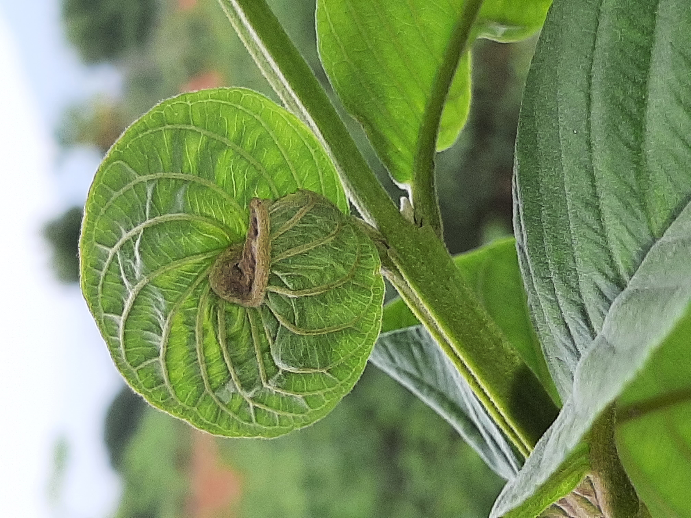

"LEAF SCULPTURE ?
WHAT ON EARTH IS THAT?"
"Learning through observing . Shaping our future."
A Small contribution towards UNESCO's Education for Sustainable Development (ESD) for 2030.
🌿 FOR NATURE . 🎓 FOR LEARNING . 🌍 FOR PLANET. ♾️ FOR FUTURE
You have walked through galleries of stone, canvas, and glass, marveling at the strokes of human genius. But the most profound masterpieces in human history were never painted, sculpted, or drafted by our hands. They were silently engineered by the earth itself.
What you are about to witness is an unprecedented archive of living architecture. These captures are not mere observations of flora; they are high art. From sweeping, sculptural folds to the deliberate venation mapping a single leaf, nature translates its deepest ethics through physical design. Millions of years of evolution have carved these temporary forms, presenting a flawless green blueprint of survival, symmetry, and perfect continuity.
This space deliberately strips away the noise. There are no grand artist biographies or heavy plaques here—only the raw visual truths of the natural world, anchored by a hidden rhythm. As you interact with each piece, you will uncover a singular, pulsing heartbeat: a disciplined two-line cadence that binds these silent biological designs to the enduring legacy of the earth.
Step back, observe the deliberate strokes of the supreme engineer, and witness the art of the ephemeral.

NO BRUSH. NO CHISEL. NO MODELLING.
SCULPTURE THROUGH GROWTH.
Discover the unexplored visual art forms emerging naturally in leaves.
FOR PLANET . FOR FUTURE
WHAT IF SCULPTURE COULD CREATE ITSELF?
The world of visual arts has given humanity many remarkable forms of expression.
Architecture. Ceramic Art. Conceptual Art. Drawing.
Painting. Photography. Sculpture. Applied Arts.
Each has its own language, materials, techniques, and traditions. Among them, sculpture is the art of creating three-dimensional form. Traditionally, sculpture involves the intervention of the artist—shaping, carving, modelling, assembling, or otherwise transforming material into a desired form.
But this museum begins with an unusual observation: What if a sculptural form could emerge without an artist sculpting it?
Look closely at a leaf. It grows from within. As it develops, its structure can fold, curl, twist, bend, open, contract, or take an unexpected three-dimensional form. There is no carving. There is no modelling. There is no external hand shaping the finished structure.
THE SCULPTURE EMERGES THROUGH THE LEAF'S OWN GROWTH.
That is the observation from which this museum was born.
OUR PLACE WITHIN VISUAL ART
We recognise the established classification of the visual arts. Therefore, this museum does not seek to create a separate replacement for sculpture. Instead, we place our work within the existing visual-art family:
VISUAL ARTS
↓
SCULPTURE
↓
LEAF SCULPTURE
↓
SCULPTURE EMERGING THROUGH NATURAL GROWTH
Leaf Sculpture is our proposed descriptive sub-category for the collection. It refers to three-dimensional visual forms that naturally emerge in leaves through their own growth and development.
WHAT MAKES IT DIFFERENT FROM HUMAN SCULPTURE?
The difference is not simply the material. A human artist may sculpt stone, wood, clay, metal, or other materials. The fundamental difference is where the shaping process takes place.
HUMAN SCULPTURE: Artist → Material → Carving / Modelling → Form
The artist deliberately transforms material to create the sculpture.
LEAF SCULPTURE: Living leaf → Growth → Natural structural development → Form
The form emerges as part of the leaf's own development. The human does not create the form. The human discovers and documents the form.
CARVING. MODELLING. GROWTH.
Traditional sculpture can broadly involve:
CARVING: Removing material to reveal or create form.
MODELLING: Adding, shaping, or manipulating material to construct form.
LEAF SCULPTURE: Neither.
There is no separate carving stage. There is no separate modelling stage. GROWTH ITSELF BECOMES THE FORM-GENERATING PROCESS.
The leaf does not first become a standard finished object and then undergo sculpting. Its structure develops as it grows. The unusual sculptural expression can therefore be part of the growth journey itself.
That is the central observation of this museum.
WHY CALL IT ART?
We do not claim that a leaf possesses human artistic intention. The term art here describes the remarkable visual form that humans encounter and document.
The leaf provides the living material. Growth provides the process. Nature provides the conditions. The human observer provides the recognition.
The human does not make the sculpture.
The human discovers the sculpture.
FROM A GARDEN TO A DIGITAL MUSEUM
The idea began not inside an art studio, gallery, or laboratory, but through close observation of ordinary leaves in a garden. Forms that might normally be dismissed as a curl, a fold, a twist, a bend, or an unusual growth can reveal another possibility when observed carefully: A naturally emerging sculptural form.
This museum will preserve these observations through an expanding collection of authentic, in-situ photographs of leaf forms. What begins as one overlooked leaf can become one permanent archive. One archive can become a collection. A collection can become a museum. And the museum can invite millions of people to look at an ordinary leaf differently.
THE MUSEUM'S CENTRAL IDEA
SCULPTURE WITHOUT CARVING.
SCULPTURE WITHOUT MODELLING.
SCULPTURE THROUGH GROWTH.
This is the perspective that this museum seeks to explore. Not to replace established art. Not to claim that Nature intentionally creates art. But to ask a simple question:
Have we been looking at leaves as living objects — without noticing the sculptural forms emerging within them?
To create a living digital archive that transforms the way people see, understand and learn from Nature — beginning with the overlooked art forms naturally created by leaves.
This museum will document and preserve naturally occurring leaf art forms through authentic, in-situ observations and photographs, creating a growing digital collection of Nature’s visual expressions.
The vision goes beyond displaying beautiful images. It is to encourage a new way of learning:
LOOK → NOTICE → QUESTION → UNDERSTAND → RESPECT → ACT
By bringing the overlooked details of leaves into a public learning space, the archive seeks to nurture curiosity, observation, environmental awareness and a deeper connection between people and the natural world.
OUR ESD FOR 2030 VISION
The archive will function as a digital learning space for Education for Sustainable Development, supporting UNESCO’s ESD for 2030 vision of empowering people with the knowledge, skills, values, attitudes and behaviours needed for a more sustainable future.
It will especially contribute to the ESD principle of learning to act for people and planet — beginning with something that is already around us, yet rarely observed deeply: the leaf.
Through observation-led learning, the museum aims to encourage learners, educators, young people and communities to look more carefully at living systems and to recognize that Nature itself can become a powerful learning environment.
OUR CONTRIBUTION TO THE SUSTAINABLE DEVELOPMENT GOALS
The archive will contribute primarily to:
SDG 4 — QUALITY EDUCATION
Learning through observation, discovery and lifelong environmental learning.
The museum will make Nature a digital learning resource. Every archived leaf becomes an opportunity to ask questions, investigate natural processes and develop environmental understanding.
SDG 12 — RESPONSIBLE CONSUMPTION AND PRODUCTION
Learning to recognize value before consuming or discarding.
By revealing complexity, functionality and beauty in ordinary natural materials, the archive encourages a mindset that looks beyond immediate use and recognizes the value of natural systems.
SDG 13 — CLIMATE ACTION
Building climate awareness through direct connection with the natural world.
Climate action begins not only with information, but also with understanding and connection. The archive seeks to strengthen that connection by making everyday Nature a subject of observation and learning.
SDG 15 — LIFE ON LAND
Increasing awareness, respect and understanding of terrestrial life and ecosystems.
Every leaf belongs to a living system. Documenting its forms encourages closer attention to plants, biodiversity and terrestrial ecosystems, helping transform an ordinary garden observation into an opportunity for environmental learning.
OUR LONG-TERM VISION
We envision a digital museum where hundreds of naturally occurring leaf art forms can be discovered, documented, classified and studied — creating a unique visual record of Nature's forms from ordinary places.
The museum will remain open to learners, educators, researchers, artists, environmental thinkers and anyone willing to look again.
Because sustainability begins not only with what we do, but with what we learn to see.
LEARN TO SEE NATURE.
SEE TO UNDERSTAND.
UNDERSTAND TO SUSTAIN.
To discover, document, preserve and share the naturally occurring art forms of leaves — transforming everyday observations of Nature into a lasting digital learning resource for people, planet and future generations.
Our mission is to create a unique digital museum dedicated exclusively to art forms naturally expressed by leaves.
We will build the archive through direct observation and authentic in-situ documentation, preserving the original visual character of each discovery rather than recreating, modifying or artificially producing it.
WE WILL:
01 — DISCOVER
Look beyond the ordinary leaf and identify unusual, unexpected and visually distinctive natural forms that are often seen but rarely noticed.
02 — DOCUMENT
Create a growing archive using authentic observations and original photographs captured in their natural surroundings.
03 — PRESERVE
Give each documented form a permanent digital place so that these fleeting or easily overlooked expressions of Nature can remain available for future learning and reference.
04 — CLASSIFY
Develop a simple and meaningful system for recording different types of naturally occurring leaf art forms, allowing the collection to grow into a structured digital museum rather than remain a random gallery of photographs.
05 — EDUCATE
Use each archive as a starting point for observation, questioning, discovery and environmental learning — making an ordinary leaf an accessible learning resource.
06 — INSPIRE OBSERVATION
Encourage people, especially learners and young people, to look more closely at the Nature around them and discover that learning does not always require a classroom, textbook or laboratory.
07 — BUILD COLLECTIVE KNOWLEDGE
Create a platform where future observations can add to humanity's visual understanding of naturally occurring leaf forms, while encouraging responsible documentation and respect for Nature.
08 — CONNECT OBSERVATION WITH SUSTAINABILITY
Use the archive to strengthen environmental awareness and contribute to Education for Sustainable Development (ESD) for 2030, particularly through learning, observation, curiosity, respect for living systems and responsible thinking.
OUR COMMITMENT
This museum will not attempt to make Nature into human art.
It will simply give Nature's overlooked leaf forms a place to be seen, studied and appreciated.
Every archive will begin with a simple act:
Someone stopped.
Someone looked closely.
Someone noticed.
And from that moment of noticing, a new form of learning begins.
OUR MISSION IN ONE LINE
DOCUMENT WHAT NATURE CREATES.
SHARE WHAT WE DISCOVER.
INSPIRE PEOPLE TO SEE AGAIN.